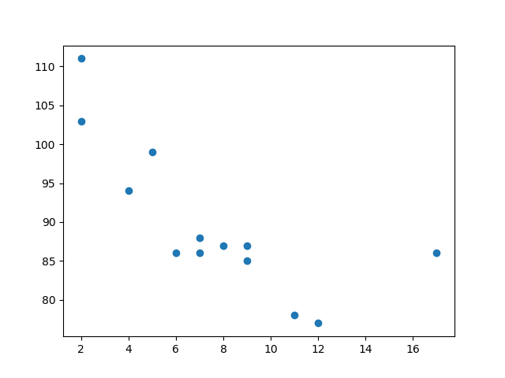
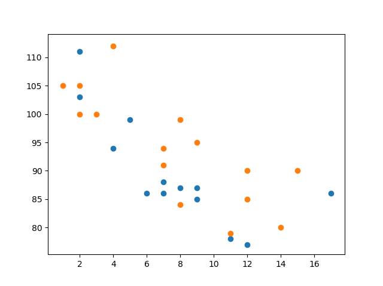
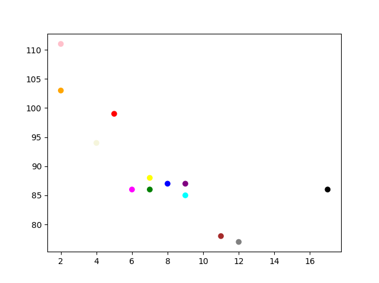
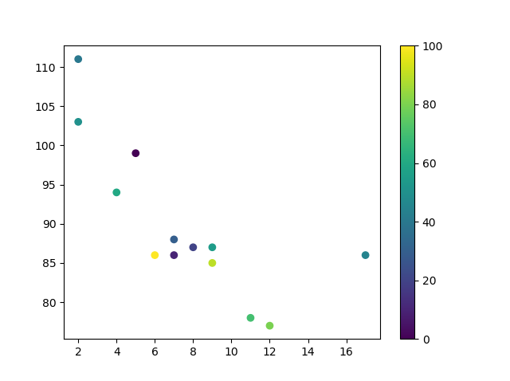
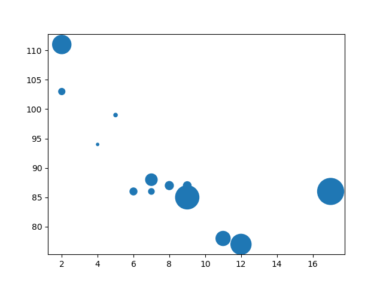
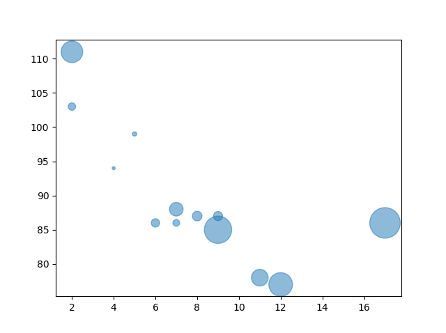
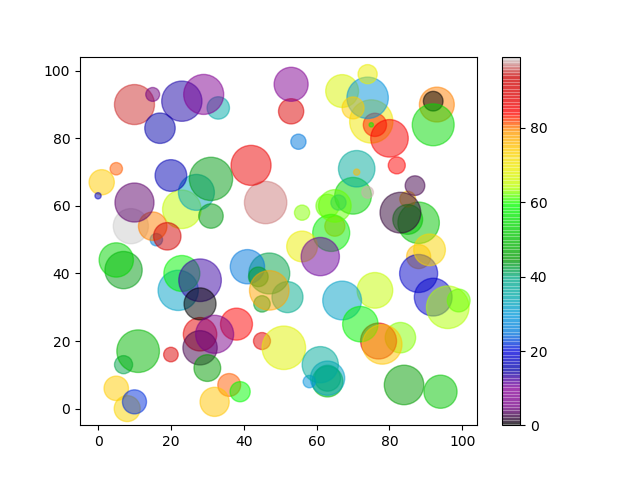

Matplotlib 散点图
创建散点图
使用 Pyplot，您可以使用 scatter() 函数来绘制散点图。
scatter() 函数为每个观测值绘制一个点。它需要两个长度相同的数组，一个用于 x 轴的值，另一个用于 y 轴的值：
实例
一个简单的散点图：
import matplotlib.pyplot as plt import numpy as np x = np.array([5,7,8,7,2,17,2,9,4,11,12,9,6]) y = np.array([99,86,87,88,111,86,103,87,94,78,77,85,86]) plt.scatter(x, y) plt.show()
结果：

上例中的观测值是 13 辆汽车经过的结果。
X 轴显示了汽车的车龄。
Y 轴显示了汽车经过时的速度。
这些观测值之间是否存在关系？
看起来车越新，开得越快，但这可能只是巧合，毕竟我们只记录了 13 辆汽车。
比较图表
在上面的例子中，速度和年龄之间似乎存在某种关系，但如果我们再将另一天的观测值也绘制出来会如何呢？散点图会告诉我们其他信息吗？
实例
在同一张图上绘制两个图表：
import matplotlib.pyplot as plt import numpy as np # 第一天，13 辆汽车的车龄和速度： x = np.array([5,7,8,7,2,17,2,9,4,11,12,9,6]) y = np.array([99,86,87,88,111,86,103,87,94,78,77,85,86]) plt.scatter(x, y) # 第二天，15 辆汽车的车龄和速度： x = np.array([2,2,8,1,15,8,12,9,7,3,11,4,7,14,12]) y = np.array([100,105,84,105,90,99,90,95,94,100,79,112,91,80,85]) plt.scatter(x, y) plt.show()
结果：

注意：两个图表使用两种不同的颜色绘制，默认是蓝色和橙色，稍后在本章中您将学习如何更改颜色。
通过比较这两个图表，我认为可以安全地说它们都给出了相同的结论：汽车越新，开得越快。
颜色
您可以使用 color 或 c 参数为每个散点图设置自己的颜色：
实例
设置标记点的颜色：
import matplotlib.pyplot as plt import numpy as np x = np.array([5,7,8,7,2,17,2,9,4,11,12,9,6]) y = np.array([99,86,87,88,111,86,103,87,94,78,77,85,86]) plt.scatter(x, y, color = 'hotpink') x = np.array([2,2,8,1,15,8,12,9,7,3,11,4,7,14,12]) y = np.array([100,105,84,105,90,99,90,95,94,100,79,112,91,80,85]) plt.scatter(x, y, color = '#88c999') plt.show()
结果：

为每个点着色
您甚至可以使用颜色数组作为 c 参数的值来为每个点设置特定颜色：
注意：您不能为此使用 color 参数，只能使用 c 参数。
实例
设置标记点的颜色：
import matplotlib.pyplot as plt import numpy as np x = np.array([5,7,8,7,2,17,2,9,4,11,12,9,6]) y = np.array([99,86,87,88,111,86,103,87,94,78,77,85,86]) colors = np.array(["red","green","blue","yellow","pink","black","orange","purple","beige","brown","gray","cyan","magenta"]) plt.scatter(x, y, c=colors) plt.show()
结果：

彩色映射
Matplotlib 模块提供了许多可用的彩色映射。
彩色映射就像颜色列表，其中每种颜色都有一个从 0 到 100 的值。
以下是一个彩色映射的例子：

这个彩色映射称为 'viridis'，如您所见，它从 0（紫色）开始，一直到 100（黄色）。
如何使用彩色映射
您可以使用关键字参数 cmap 和彩色映射的值来指定彩色映射，在这种情况下，'viridis' 是 Matplotlib 中可用的内置彩色映射之一。
此外，您必须创建一个数组，其中包含值（从 0 到 100），每个散点图中的点一个值：
实例
创建颜色数组，并在散点图中指定彩色映射：
import matplotlib.pyplot as plt import numpy as np x = np.array([5,7,8,7,2,17,2,9,4,11,12,9,6]) y = np.array([99,86,87,88,111,86,103,87,94,78,77,85,86]) colors = np.array([0, 10, 20, 30, 40, 45, 50, 55, 60, 70, 80, 90, 100]) plt.scatter(x, y, c=colors, cmap='viridis') plt.show()
结果：

您可以通过包含 plt.colorbar() 语句来在绘图中包含彩色映射：
实例
包含实际的彩色映射：
import matplotlib.pyplot as plt import numpy as np x = np.array([5,7,8,7,2,17,2,9,4,11,12,9,6]) y = np.array([99,86,87,88,111,86,103,87,94,78,77,85,86]) colors = np.array([0, 10, 20, 30, 40, 45, 50, 55, 60, 70, 80, 90, 100]) plt.scatter(x, y, c=colors, cmap='viridis') plt.colorbar() plt.show()
结果：

可用的彩色映射
您可以选择任意内置彩色映射：
| 名称 | 试一试 | 反转 | 试一试 |
|---|---|---|---|
| Accent | 试一试 | Accent_r | 试一试 |
| Blues | 试一试 | Blues_r | 试一试 |
| BrBG | 试一试 | BrBG_r | 试一试 |
| BuGn | 试一试 | BuGn_r | 试一试 |
| BuPu | 试一试 | BuPu_r | 试一试 |
| CMRmap | 试一试 | CMRmap_r | 试一试 |
| Dark2 | 试一试 | Dark2_r | 试一试 |
| GnBu | 试一试 | GnBu_r | 试一试 |
| Greens | 试一试 | Greens_r | 试一试 |
| Greys | 试一试 | Greys_r | 试一试 |
| OrRd | 试一试 | OrRd_r | 试一试 |
| Oranges | 试一试 | Oranges_r | 试一试 |
| PRGn | 试一试 | PRGn_r | 试一试 |
| Paired | 试一试 | Paired_r | 试一试 |
| Pastel1 | 试一试 | Pastel1_r | 试一试 |
| Pastel2 | 试一试 | Pastel2_r | 试一试 |
| PiYG | 试一试 | PiYG_r | 试一试 |
| PuBu | 试一试 | PuBu_r | 试一试 |
| PuBuGn | 试一试 | PuBuGn_r | 试一试 |
| PuOr | 试一试 | PuOr_r | 试一试 |
| PuRd | 试一试 | PuRd_r | 试一试 |
| Purples | 试一试 | Purples_r | 试一试 |
| RdBu | 试一试 | RdBu_r | 试一试 |
| RdGy | 试一试 | RdGy_r | 试一试 |
| RdPu | 试一试 | RdPu_r | 试一试 |
| RdYlBu | 试一试 | RdYlBu_r | 试一试 |
| RdYlGn | 试一试 | RdYlGn_r | 试一试 |
| Reds | 试一试 | Reds_r | 试一试 |
| Set1 | 试一试 | Set1_r | 试一试 |
| Set2 | 试一试 | Set2_r | 试一试 |
| Set3 | 试一试 | Set3_r | 试一试 |
| Spectral | 试一试 | Spectral_r | 试一试 |
| Wistia | 试一试 | Wistia_r | 试一试 |
| YlGn | 试一试 | YlGn_r | 试一试 |
| YlGnBu | 试一试 | YlGnBu_r | 试一试 |
| YlOrBr | 试一试 | YlOrBr_r | 试一试 |
| YlOrRd | 试一试 | YlOrRd_r | 试一试 |
| afmhot | 试一试 | afmhot_r | 试一试 |
| autumn | 试一试 | autumn_r | 试一试 |
| binary | 试一试 | binary_r | 试一试 |
| bone | 试一试 | bone_r | 试一试 |
| brg | 试一试 | brg_r | 试一试 |
| bwr | 试一试 | bwr_r | 试一试 |
| cividis | 试一试 | cividis_r | 试一试 |
| cool | 试一试 | cool_r | 试一试 |
| coolwarm | 试一试 | coolwarm_r | 试一试 |
| copper | 试一试 | copper_r | 试一试 |
| cubehelix | 试一试 | cubehelix_r | 试一试 |
| flag | 试一试 | flag_r | 试一试 |
| gist_earth | 试一试 | gist_earth_r | 试一试 |
| gist_gray | 试一试 | gist_gray_r | 试一试 |
| gist_heat | 试一试 | gist_heat_r | 试一试 |
| gist_ncar | 试一试 | gist_ncar_r | 试一试 |
| gist_rainbow | 试一试 | gist_rainbow_r | 试一试 |
| gist_stern | 试一试 | gist_stern_r | 试一试 |
| gist_yarg | 试一试 | gist_yarg_r | 试一试 |
| gnuplot | 试一试 | gnuplot_r | 试一试 |
| gnuplot2 | 试一试 | gnuplot2_r | 试一试 |
| gray | 试一试 | gray_r | 试一试 |
| hot | 试一试 | hot_r | 试一试 |
| hsv | 试一试 | hsv_r | 试一试 |
| inferno | 试一试 | inferno_r | 试一试 |
| jet | 试一试 | jet_r | 试一试 |
| magma | 试一试 | magma_r | 试一试 |
| nipy_spectral | 试一试 | nipy_spectral_r | 试一试 |
| ocean | 试一试 | ocean_r | 试一试 |
| pink | 试一试 | pink_r | 试一试 |
| plasma | 试一试 | plasma_r | 试一试 |
| prism | 试一试 | prism_r | 试一试 |
| rainbow | 试一试 | rainbow_r | 试一试 |
| seismic | 试一试 | seismic_r | 试一试 |
| spring | 试一试 | spring_r | 试一试 |
| summer | 试一试 | summer_r | 试一试 |
| tab10 | 试一试 | tab10_r | 试一试 |
| tab20 | 试一试 | tab20_r | 试一试 |
| tab20b | 试一试 | tab20b_r | 试一试 |
| tab20c | 试一试 | tab20c_r | 试一试 |
| terrain | 试一试 | terrain_r | 试一试 |
| twilight | 试一试 | twilight_r | 试一试 |
| twilight_shifted | 试一试 | twilight_shifted_r | 试一试 |
| viridis | 试一试 | viridis_r | 试一试 |
| winter | 试一试 | winter_r | 试一试 |
大小
您可以使用 s 参数来改变点的大小。
就像颜色一样，请确保 sizes 数组的长度与 x 轴和 y 轴的数组长度相同：
实例
为标记设置您自己的大小：
import matplotlib.pyplot as plt import numpy as np x = np.array([5,7,8,7,2,17,2,9,4,11,12,9,6]) y = np.array([99,86,87,88,111,86,103,87,94,78,77,85,86]) sizes = np.array([20,50,100,200,500,1000,60,90,10,300,600,800,75]) plt.scatter(x, y, s=sizes) plt.show()
结果：

透明度
您可以使用 alpha 参数来调整点的透明度。
就像颜色一样，请确保 sizes 数组的长度与 x 轴和 y 轴的数组长度相同：
实例
为标记设置您自己的大小：
import matplotlib.pyplot as plt import numpy as np x = np.array([5,7,8,7,2,17,2,9,4,11,12,9,6]) y = np.array([99,86,87,88,111,86,103,87,94,78,77,85,86]) sizes = np.array([20,50,100,200,500,1000,60,90,10,300,600,800,75]) plt.scatter(x, y, s=sizes, alpha=0.5) plt.show()
结果：

结合颜色、大小和透明度
您可以将色彩映射与不同大小的点结合起来。如果点是透明的，这将得到最好的可视化效果：
实例
为 x 点、y 点、颜色和大小创建包含 100 个值的随机数组：
import matplotlib.pyplot as plt import numpy as np x = np.random.randint(100, size=(100)) y = np.random.randint(100, size=(100)) colors = np.random.randint(100, size=(100)) sizes = 10 * np.random.randint(100, size=(100)) plt.scatter(x, y, c=colors, s=sizes, alpha=0.5, cmap='nipy_spectral') plt.colorbar() plt.show()
结果：
